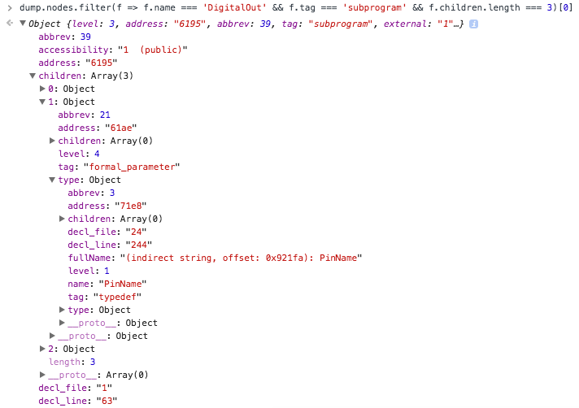

Status: Loading objdump...
After the objdump is loaded, open your browser's console, and explore the tree. For example:
dump.nodes.filter(f => f.name === 'DigitalOut' && f.tag === 'subprogram' && f.children.length === 3)[0]
Gives you:
